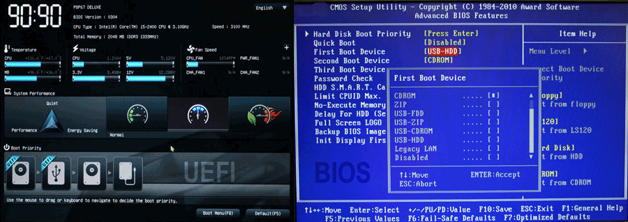

Components
BIOS/UEFI
Introduction
The following table describes Unified Extensible Firmware Interface (UEFI), Basic Input/Output System (BIOS), Electrically Erasable Programmable Read-Only Memory (EEPROM), and Complementary Metal-Oxide Semiconductor (CMOS).
Component Descriptions
UEFI
The UEFI was designed to replace the BIOS. Important facts about UEFI include:
- The UEFI is firmware.
- The UEFI program controls the startup process; it also loads the operating system into memory.
- The UEFI design improves the software interoperability and the address limitations of BIOS.
- The UEFI provides better security to protect against bootkits (malware attacks on the boot process).
- The UEFI provides faster startup times.
- The UEFI supports drives larger than 2.2 terabytes.
- The UEFI supports 64-bit firmware device drivers.
- The UEFI is compatible with both BIOS and UEFI hardware.
- You should frequently check for UEFI updates from the manufacturer. Flashing is the process of updating the UEFI. Flashing makes new features available.
Bios
The BIOS is a legacy program stored in a read-only memory (ROM) chip that the CPU automatically loads and executes when it receives power. Important things to know about the BIOS are:
- The BIOS program controls the startup process and loads the operating system into memory.
- The BIOS is firmware.
- You should frequently check for BIOS updates from the manufacturer. Updating the BIOS (called flashing the BIOS) makes new features available, such as allowing the BIOS to recognize newer hardware devices.
- Most BIOS chips vary from 265 KB to 1 MB in size.
- Video cards include a BIOS chip on the device. These devices have their own ROM chip called an option ROM (OpROM).
EEPROM
The EEPROM is a ROM chip that replaced the CMOS chip. Important things about EEPROM are:
- EEPROM is a type of non-volatile memory used in computers and other electronic devices to store relatively small amounts of data.
- EEPROM allows individual bytes to be erased and reprogrammed.
- EEPROM replaced EPROM chips and is used for computer BIOS built after 1994.
- EEPROM chips allow you to update the BIOS/UEFI in a computer without opening the computer and removing any chips.
CMOS
CMOS is legacy computer chip technology that has become a general term used for the program that stores important system information related to starting a computer. It is often used synonymously with BIOS.
Data held in CMOS includes the hard disk type and configuration; the order of boot devices; and other configurable settings related to the system hardware. Important facts about CMOS include:
<- To change the data stored in CMOS, you use a CMOS editor program that is part of the BIOS.
- CMOS used to refer to the real-time clock and the CMOS chip that stored system information. Both were powered by a CMOS battery. Now, the EEPROM chip stores the system information that was on the CMOS chip. EEPROM requires no power to maintain data storage.
- The CMOS battery is still used to keep the real-time system clock running when the computer is powered off. It can be a low-voltage dry cell, lithium mounted on the motherboard, or even AA batteries in a housing clipped on a wall inside of the case. The electric current is about 1 millionth of an amp and can provide effective power for years.
During the computer's startup procedure, you can press one or more keys to open a CMOS editor to change the data stored in CMOS memory. This CMOS setup program is part of the BIOS program. The key or keys you press to open the CMOS editor depend on the BIOS manufacturer. The easiest way to find out which key to press is to read the screen as it boots or to consult the motherboard documentation. The most common keys are Delete, Insert, F1, and F2.
Common reasons for editing the CMOS settings are to:
- Change the boot device order.
- Enable or disable motherboard devices.
- Add a password to the setup program to prevent unauthorized access.
- Remove the password for most motherboards, move (remove a jumper) and replace it after a specific period of time.
- Configure processor or memory settings (e.g., when you need to set operating speeds or when you want to overclock hardware settings).
- Manually configure device properties for legacy devices. (You do this only in rare cases).
One of the main jobs of the BIOS/UEFI is to help start the system. The following process occurs when you turn on a computer:
- Power is supplied to the processor. The processor is hard-coded to look at a special memory address for the code to execute.
- This memory address contains a pointer or jump program that instructs the processor where to find the BIOS program. The processor loads the BIOS program. The first BIOS process to run is the power-on self-test (POST) process. POST does the following:
- Verifies the integrity of the BIOS/UEFI code.
- Looks for the BIOS on the video card and loads it. This powers the video card and results in information displayed on the monitor.
- Looks for BIOS programs on other devices (such as hard disk controllers) and loads those.
- Tests system devices, such as verifying the amount of memory on the system.
- After POST tests complete, the BIOS identifies other system devices. It uses CMOS settings and information supplied by the devices themselves to identify and configure hardware devices. It allocates system resources to plug-and-play devices.
- The BIOS searches for a boot drive using the boot order specified in the CMOS.
- On the boot device, the BIOS/UEFI searches for the master bootloader and loads the bootloader program. At this point, the BIOS/UEFI stops controlling the system and passes control to the bootloader program.
- The bootloader program is configured to locate and load the operating system.
- As the operating system loads, steps are taken to load all additional programs and configure devices for use by the operating system.
From time to time, a PC manufacturer may release updates to the BIOS firmware. To update the BIOS, you download the update along with a utility provided by the PC manufacturer. You flash the BIOS to rewrite data stored in the BIOS chip. The steps you follow to flash the BIOS will vary by manufacturer.